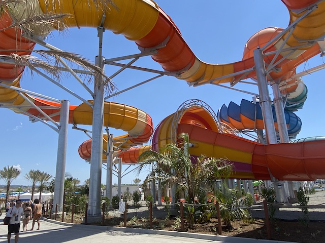
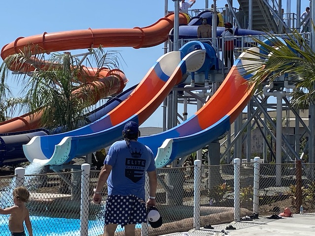
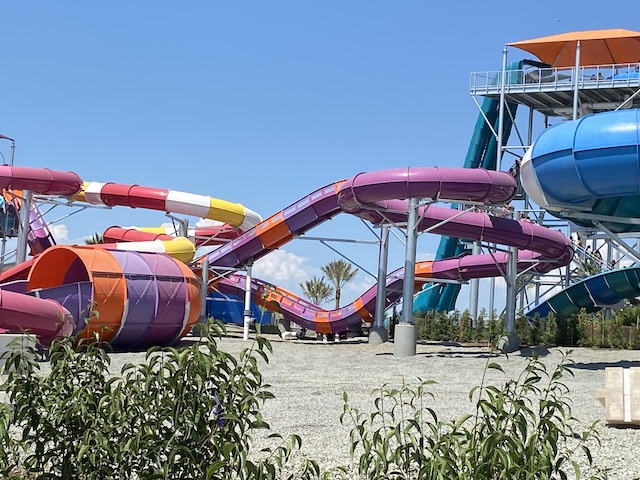
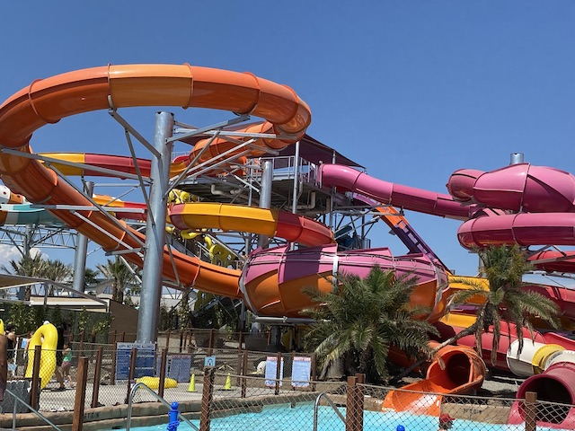
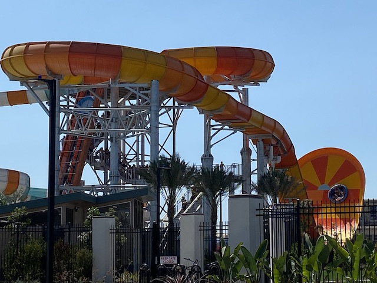
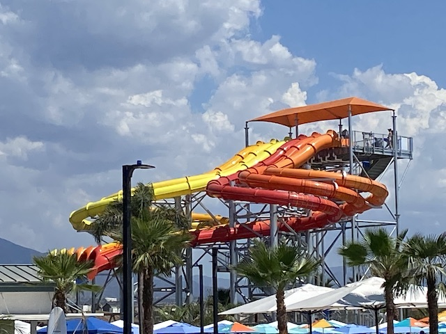

| |
Wild Rivers 2022
 All right. So as you know, 11 years ago, the best water park in California closed. And....yeah. That decision INFURIATED ME!!! You've probably heard me bitch and rant about the destruction of Wild Rivers for years. And this was killed solely for the sake of building more houses (And no. These homes are not affordable and do not help with the housing crisis in California). Now for years, Wild Rivers had been saying "We're working on building a replacement water park. Wild Rivers 2.0 is being built". However, this was constantly said, but kept running into issues. And it sort of became a vapid empty promise that I honestly stopped paying attention to as it felt that it just would never happen and that my last visit to Wild Rivers and all the other visits would just be a pleasant teenage/young adult memory of the late 2000s and early 2010s. Plus, I had other amazing park trips to distract me, as well as other horrible theme park decisions for me to get angry about instead. Well this all changed in 2021 when suddenly, I was reminded of the New Wild Rivers, and....HOLY SH*T!!! IT'S ACTUALLY COMING ALONG!!! IT'S GONNA OPEN IN 2022!!! And...given just how much I LOVED Wild Rivers, I HAD to check out New Wild Rivers. So....I'm EXTEREMELY happy to be back here. =)
All right. So as you know, 11 years ago, the best water park in California closed. And....yeah. That decision INFURIATED ME!!! You've probably heard me bitch and rant about the destruction of Wild Rivers for years. And this was killed solely for the sake of building more houses (And no. These homes are not affordable and do not help with the housing crisis in California). Now for years, Wild Rivers had been saying "We're working on building a replacement water park. Wild Rivers 2.0 is being built". However, this was constantly said, but kept running into issues. And it sort of became a vapid empty promise that I honestly stopped paying attention to as it felt that it just would never happen and that my last visit to Wild Rivers and all the other visits would just be a pleasant teenage/young adult memory of the late 2000s and early 2010s. Plus, I had other amazing park trips to distract me, as well as other horrible theme park decisions for me to get angry about instead. Well this all changed in 2021 when suddenly, I was reminded of the New Wild Rivers, and....HOLY SH*T!!! IT'S ACTUALLY COMING ALONG!!! IT'S GONNA OPEN IN 2022!!! And...given just how much I LOVED Wild Rivers, I HAD to check out New Wild Rivers. So....I'm EXTEREMELY happy to be back here. =)
 First water slide of New Wild Rivers.
First water slide of New Wild Rivers.

So Typhoon was a really fun slide. A big standard slide. Only with a lot of tantrums inside. It's nice to ride one of these rides where the tantrum elements are just a fun element to give the slide some spice, rather than the whole purpose and star of the slide.
First things first, I LOVE the designs for the logos of all the slides at New Wild Rivers. Whoever they hired to do the logos and artwork did a FANTASTIC job. Hopefully they get plenty of great graphic design work.
Second of all, IS THAT WHAT I THINK IT IS!!? =D
 Yep. They recreated Bombay Blasters for New Wild Rivers (sort of). This was one of my favorite water slides not only at the original Wild Rivers, but just one of my favorite water slides of all time! So naturally, I'm EXTREMELY EXCITED TO SEE HOW THE NEW VERSION OF THE RIDE HOLDS UP!!!
Yep. They recreated Bombay Blasters for New Wild Rivers (sort of). This was one of my favorite water slides not only at the original Wild Rivers, but just one of my favorite water slides of all time! So naturally, I'm EXTREMELY EXCITED TO SEE HOW THE NEW VERSION OF THE RIDE HOLDS UP!!!
 New Bombay Blasters is….almost just like the original. So close, and yet so far. The actual layout of the ride, almost feels nearly identical. And…..that drop REALLY does feel like Bombay Blaster’s famous LAUNCH!!! And it THROWS you in the pool in the EXACT same way. However, the ride feels naked due to it not being underground and just totally above ground. Like the illusion is gone. Almost kind of like Space Mountain without its music. Also, it being tucked in the corner takes away the show aspect, with the bleachers that the original had. And of course, rubber made it better. And it not being underground sort of made you see it coming, which did weaken it. But at the same time, if you rode both with your eyes closed, the only way you’d really tell the difference is due to the lack of rubber friction. They otherwise, have the same signature LAUNCH!!!
New Bombay Blasters is….almost just like the original. So close, and yet so far. The actual layout of the ride, almost feels nearly identical. And…..that drop REALLY does feel like Bombay Blaster’s famous LAUNCH!!! And it THROWS you in the pool in the EXACT same way. However, the ride feels naked due to it not being underground and just totally above ground. Like the illusion is gone. Almost kind of like Space Mountain without its music. Also, it being tucked in the corner takes away the show aspect, with the bleachers that the original had. And of course, rubber made it better. And it not being underground sort of made you see it coming, which did weaken it. But at the same time, if you rode both with your eyes closed, the only way you’d really tell the difference is due to the lack of rubber friction. They otherwise, have the same signature LAUNCH!!!

The only other slide that is officially recreated and marketed as a rebirth of an original Wild Rivers slide (there's one other that's unofficial recreation) is Tahitian Toucan, which is a more modern version of Switzer Falls. Hmm. Of all the slides to recreate, why that one? I guess it was really iconic to the locals. Well, this is really fun. Hell, this one was better since....it went faster since....no rubber.

But while I'm SUPER HAPPY to be riding Bombay Blasters again, the star attraction of New Wild Rivers is unquestionably Pelican Plunge.
 This is a FANTASTIC water coaster! Not only is it really big with some great drops and a little bit of airtime....
This is a FANTASTIC water coaster! Not only is it really big with some great drops and a little bit of airtime....
 But there's a surprise tantrum bit at the very end. And because you're already going really fast, you get some really sudden and surprising swinging action that just makes you go "HOLY SH*T!!!". This is an AMAZING slide and EASILY a Top 10 Water Slide. The ONLY reason this isn't better than Wildebeest is that it's unfortunately a short water coaster. Cause if this ride was longer, it would unironically beat Wildebeest. It's THAT GOOD!!! =D
But there's a surprise tantrum bit at the very end. And because you're already going really fast, you get some really sudden and surprising swinging action that just makes you go "HOLY SH*T!!!". This is an AMAZING slide and EASILY a Top 10 Water Slide. The ONLY reason this isn't better than Wildebeest is that it's unfortunately a short water coaster. Cause if this ride was longer, it would unironically beat Wildebeest. It's THAT GOOD!!! =D

Good news. New Wld Rivers also has a Toilet Bowl (Unofficial successor to Bazooka Bowls)! HOORAY!!! Unfortunately, it's a Tube Toilet Bowl. LAME!!! THOSE AREN'T NEARLY AS GOOD AS THE BODY TOILET BOWLS!!! Well, this is at least one of the better Tube Toilet Bowls. And there are other places that have Body Toilet Bowls. SunSplash has one (2nd best water park in California). And if you specifically want Bazooka Bowls, you're in luck. It and Patriot were the two water slides of the orignal Wild Rivers to be saved. They still live on in Canada.

Another one of the major slides they have here is a Half Pipe. And...it's a fun one. Far from the best slide ever. But the big drop and half pipe are a lot of fun. =)
We'll be getting back to you later Aquaconda.
 Checking out their lazy river. Nothing special about it. Just an ordinary lazy river (The original Wild Rivers' lazy river also wasn't anything special either)
Checking out their lazy river. Nothing special about it. Just an ordinary lazy river (The original Wild Rivers' lazy river also wasn't anything special either)
Normally, I don't like seeing crowds. But I'm VERY happy to see New Wild Rivers being successful with a lot of people visiting due to my investment in their success. =)
Hello leftover water slide pieces in the dirt.

Helix Mat Racers really seem to have gotten more popular recently with them adding one here. So happy they added one since....they're a ton of fun. (Surf Hill was a ton of fun as well due to how awkward and quirky it was. But yeah. They made the right call replacing it with one of these slides).
 Checking out Fiji Falls since....it's another one of those tantrum slides. Not the best slide ever, but just a lot of fun with some nice quirky action to give it some flavor.
Checking out Fiji Falls since....it's another one of those tantrum slides. Not the best slide ever, but just a lot of fun with some nice quirky action to give it some flavor.
Unfortunately, our fun day at Wild Rivers was cut short by a sudden and SEVERE thunderstorm very reminiscent of what they get on the East Coast during summer (Hooray! Climate Change!). Yeah. It cleared out in a couple hours, as noted in the weather predicition. But unlike in theme parks, the water parks just close for the day. The damage was already done.
Yeah. We'll be missing Aquaconda. LAME!!! =(
Wristband for our locker.
Yeah. It is coming down HARD today!
So that was our first visit to New Wild Rivers (that's what I call it to differentiate it from the original and give it its own identity). And I had a BLAST!!! I'm SO HAPPY they built this. Does this replace the original Wild Rivers. Eh...sort of. New Wild Rivers unquestionably feels like a different water park. One that's a bit more modern and up to the times of today. A lot of the quirkiness and charm of the original isn't found in here (Rubber Slides). But at the same time, not only is it a FANTASTIC water park, but you do see the wink and nod to the original.
To me, New Wild Rivers feels like when your dog dies and your parents get a new dog to replace him. Yeah. Rover II is not going to replace the original Rover. He's a different dog and you still miss original Rover. But at the same time, Rover II is a really good boy and an amazing dog too. And he does fill the hole in the family left by Rover, taking the role of family dog successfully. That's how I feel about New Wild Rivers. It's different, but still great, and it fills in the gap pretty nicely. Yeah. I still miss Congo River Rapids. But hey. They have Pelican Plunge, which let's be real. Is the best water slide both at New Wild Rivers, and the original Wild Rivers. I know I couldn't go back in 2023, but I REALLY hope to make regular visits to New Wild Rivers when life isn't total dogsh*t. It's a FANTASTIC water park that I highly recommend.
Home
|